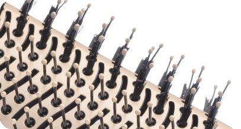
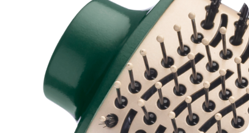

Revestimento Especial
Qu4tro Elementos:
A Linha by Juliette Qu4tro Elementos
traz um
revestimento
especial enriquecido com infusão
de Cerâmica, Titânio, Tourmaline e Nano Silver.
Esses 4 elementos, juntos, protegem seus fios e
garantem
uma aparência mais saudável
aos
cabelos, com brilho intenso,
maciez e sem frizz.
CERÂMICA
Garante uma melhor distribuição
do calor e contribui
para uma secagem rápida e mais saudável.
TITÂNIO
Tecnologia que age na umidade dos cabelos
e reduz o
tempo de secagem, além de eliminar o efeito frizz.
TOURMALINE
Fonte natural de íons negativos, que eliminam
o frizz
e garantem mais brilho.
NANO SILVER
Partículas de prata que ajudam a inibir a ação de bactérias,
contribuindo para a proteção dos fios e do couro cabeludo.
3 EM 1: SECA,
ALISA E MODELA
O poder do secador aliado à facilidade da escova. Você seca, alisa e modela o cabelo ao mesmo tempo, com uma única mão. Cuidado e beleza para um visual surpreendente!
Exclusivo suporte
de apoio
Para apoiar a sua escova e
ajudar a
preservar a forma das cerdas.
POTÊNCIA: 1200W
Alta potência para uma
secagem rápida e eficiente.

CERDAS MISTAS
Possui dois tipos de cerdas para
otimizar a tração dos fios. As flexíveis
alinham os cabelos, enquanto as cerdas
de nylon são perfeitas para modelar.

PONTA FRIA
Praticidade + segurança: a ponta fria
pode
servir de apoio enquanto você
modela o cabelo,
protegendo as mãos
do calor da escova.
3 NÍVEIS DE
TEMPERATURA
São 3 opções de ajuste para garantir
o resultado que você deseja.
BIVOLT CHAVEADO
Pode ser utilizada em ambas
voltagens:
127V e 220V. Liberdade de
usar sua
escova em qualquer lugar!
DESIGN OVAL:
FACILITA A ESCOVAÇÃO
O design oval é um aliado na hora de alisar
as mechas, pois proporciona maior tração
nos fios com o movimento da escovação.
CABO GIRATÓRIO
DE 2,5 METROS
O cabo-plugue tem 2,5 metros de
comprimento e
gira 360°, garantindo
maior autonomia de movimento.
LEVE E ERGONÔMICO
A escova secadora é leve e de fácil
manuseio.
O resultado? Maior
praticidade durante o uso!
UM ANO DE
GARANTIA MONDIAL
A Mondial é a escolha de milhões
de consumidores. Mondial, a
escolha inteligente!
A Mondial é marca líder em vários segmentos de eletrodomésticos
portáteis e está presente em grande parte dos lares brasileiros. São
mais de 400 produtos em linha. Há duas décadas, trabalha com
produtos cada vez mais tecnológicos e versáteis, oferecendo aos seus
consumidores a melhor relação custo-benefício, já que dispõe de
portáteis com alta performance para todos os públicos, reforçando a
Escolha Inteligente feita pelo consumidor ao adquirir um produto da
marca.
(Imagens Meramente Ilustrativas)